Cambodia Index: - 1 - 2 - 3 - 4 - 5 - 6 - 7 - 8 - 9 - 10 - 11 - 12
On this day we went with a small group to visit an area prison and to dedicate a classroom that Joyce Meyer Ministries built there. Most of our group went to the Leadership Conference which we were hosting for the area. We were able to rejoin the conference just before it ended.
Later that day we handed out handbills again - this time in
the more remote areas. We loved doing handbills because you really
got to connect with people (via the translators.) That evening was the first of the three
amazing festivals. What a full day!
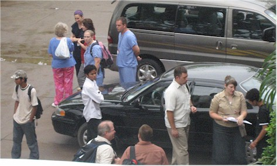
There was a big medical team from Tulsa there at the same time that we
were.
They saw thousands of people for every imaginable health issue.
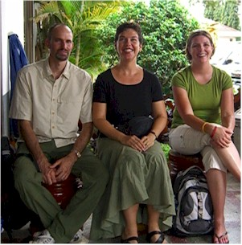

Some of the beautiful ladies from the trip.
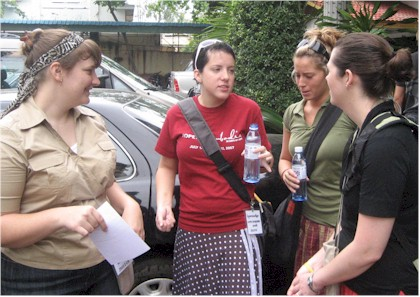
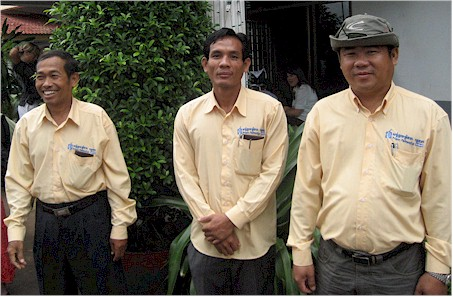
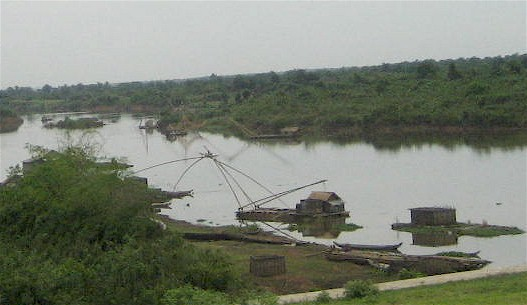
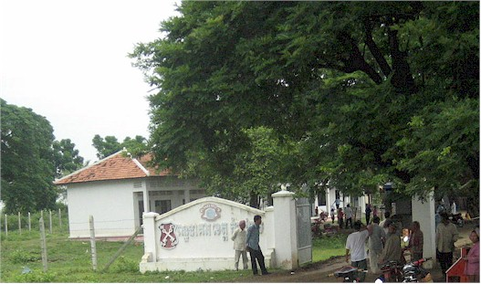
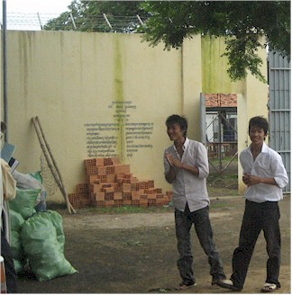
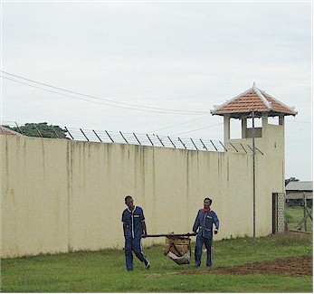
at the festivals each evenings. The one on the right is Soviet.
It was at this point they made us put our cameras
away.
Both Terry and Eric got to speak and it went very well.
We also dedicated a classroom that Joyce Meyer Ministries
has built for the inmates.
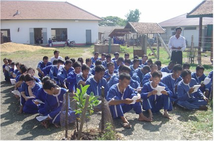
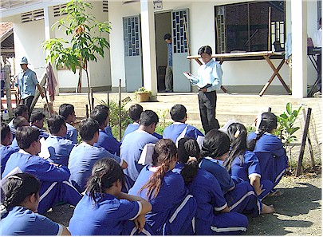
These two pictures were given to me by Pastor Socheat
from Kampong Cham Presbyterian church, who does the teaching at the
prison.
This was not the exact day we were there, but it looked almost exactly
like this.
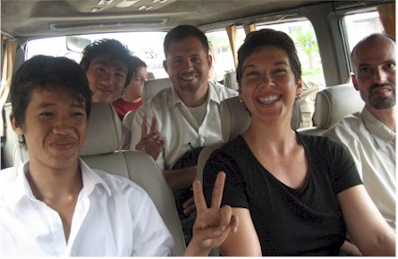
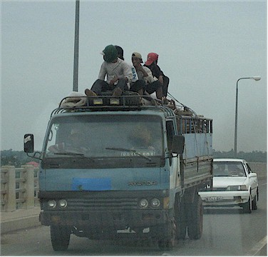
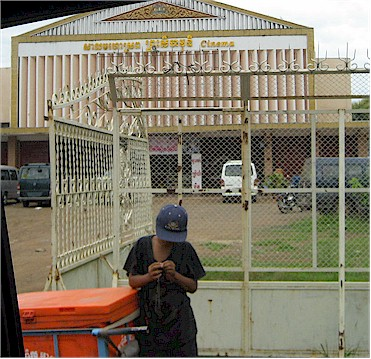
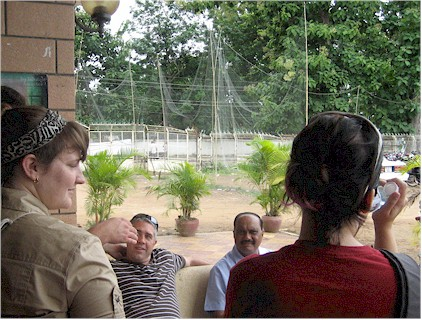
Leadership Conference was taking place.
men who were arranging things for us. That's Ron on the left.
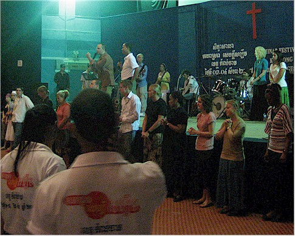
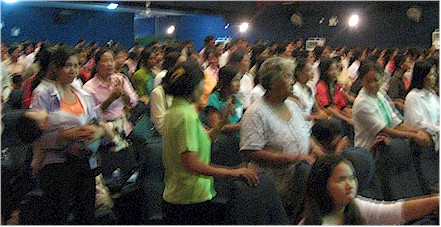
A blurry shot of the crowd.
amazing experience. It truly did not matter what language either of us spoke,
there was communication in the midst of prayer that was really moving.
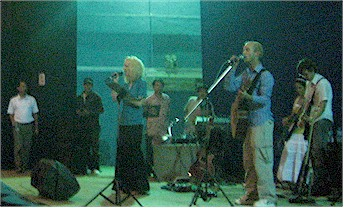
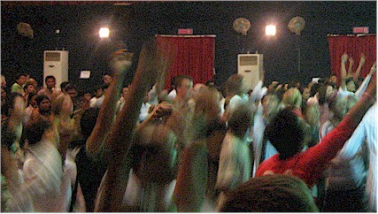
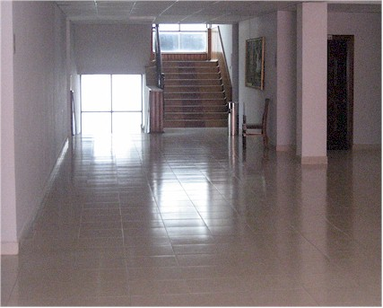
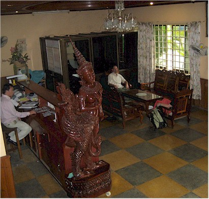
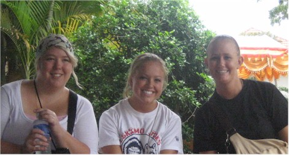
Misty, Kelly, and Gretchen - waiting for time to go to lunch, we did a lot of waiting!
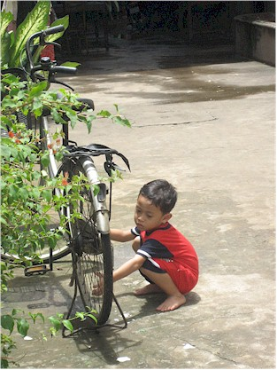


Scenes from lunch. And no, I did not try the Grass Jelly drink,
sorry.
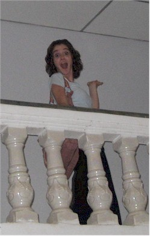
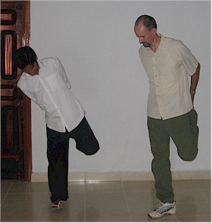
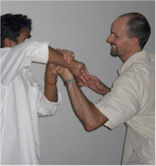
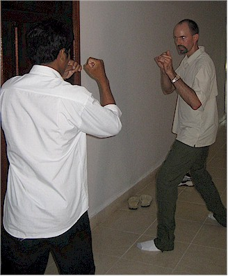
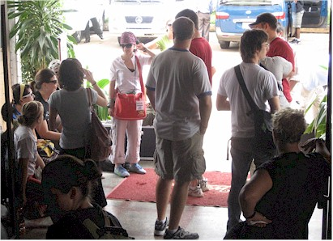
Waiting to be taken out for our second afternoon of giving out handbills.
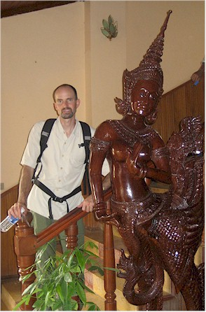
and we knew the day was only half over!)
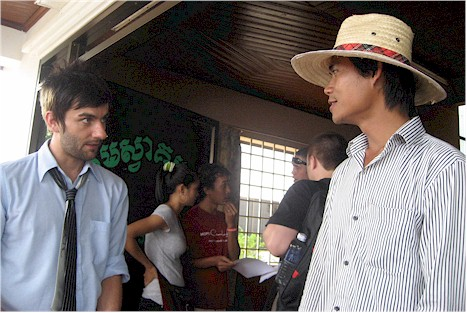
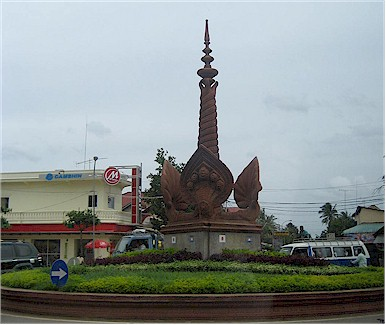
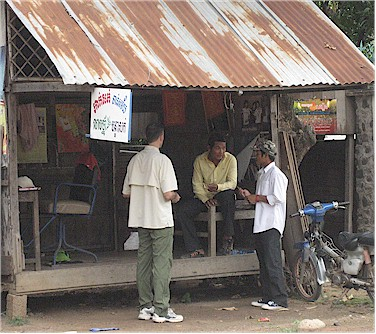
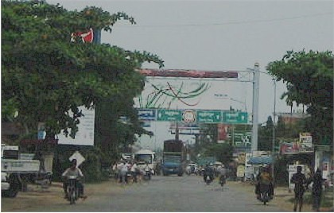
you see on top for our festival. Those guys were amazing!
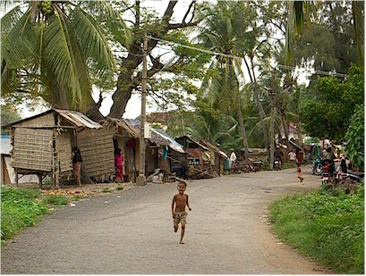
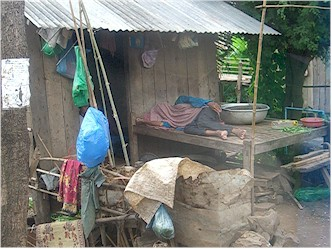
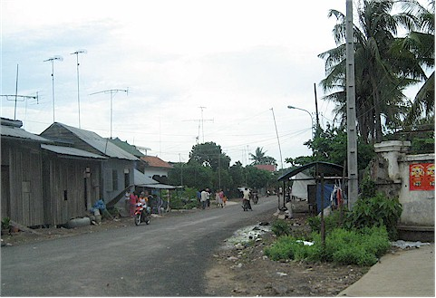
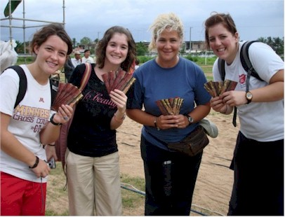
handbills we distributed.
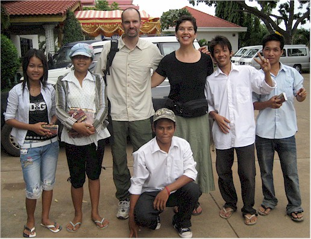
Our team that day, it was a good group.
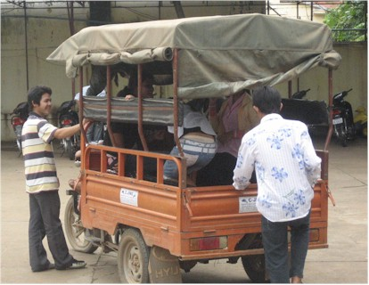
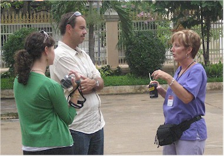
of the medical people from Tulsa.
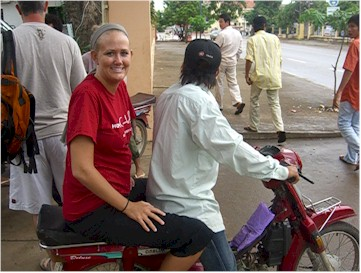
picture, those things were crazy
scary!
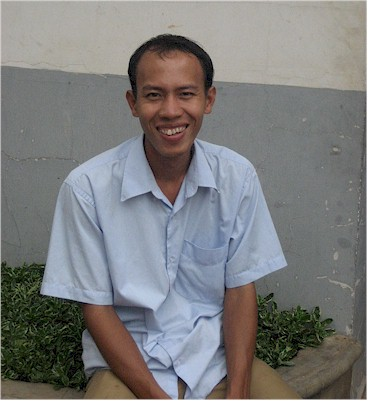
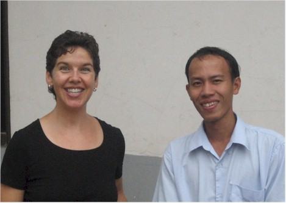
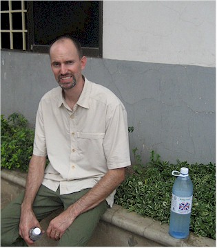
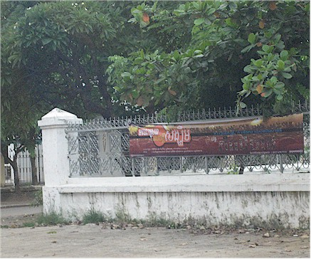
We're killing time before an early dinner.
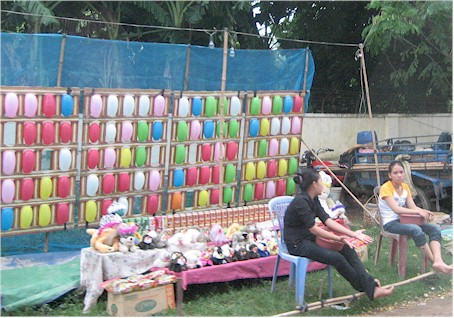
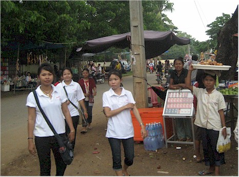
carnival type games to take advantage of the expected crowds.
(This was not sanctioned!)
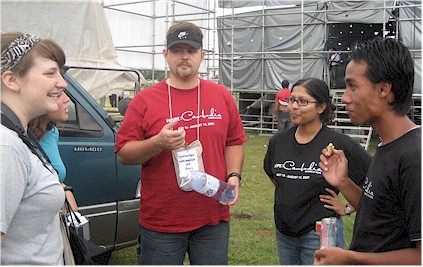
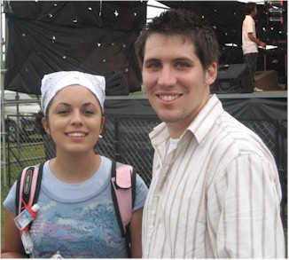
Hanging out before things got started.
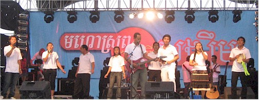
This is the Heartland church music team. We got to spend a lot of
time with them and
really loved their heart to help people. In the center is our new
friend Channa.
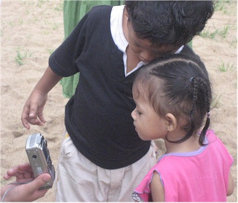
Here Channa translates for "The Chairman"
I never heard his real name but he was a sweet man.
breaking out the winter clothes!
Here's the Chairman again.
Cambodia makes a lot of the world's PJs - maybe that's why.
They were really great.
The dancing and merry-making started early.

and I'm sad that I've forgotten the other boy's name.
Another shot of the New Life team - everyone loved them.
Here Pastor David and one of our great translators
speaks to the crowd.
The crowd was very attentive and receptive.
Next it was time for the Church of the Harvest / Victory
band. It was great!!
How many kind you find in the picture above?
Cambodia Index: 1 - 2 - 3 - 4 - 5 - 6 - 7 - 8 - 9 - 10 - 11 - 12